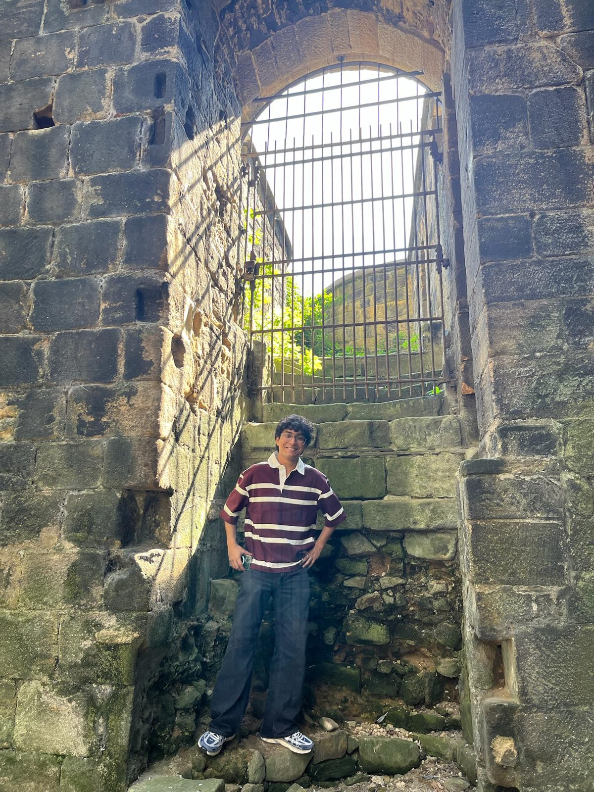

Languages:
C, C++, Java, Python, MATLAB
Welcome to my track record. Here’s a look at where I’ve worked, what I’ve built, my university work and the education that shaped how I think.
About me
C, C++, Java, Python, MATLAB
FastAPI, Streamlit, scikit-learn,
Pandas, NumPy, Matplotlib
Git, GitHub, VS Code, Jupyter,
Docker, Mbed Studio
OOP, DSA, REST APIs, SDLC,
System Design, Agile Framework

Technology Consulting Intern
Jun - Aug 2026
Technology Sales Intern
Jun - Aug 2025
Deutsche Bank Insight
Jun 2025
System Design Project
180 Degrees Consulting & Data Science Society
Engineers Without Borders Sheffield
Electrical & Electronics Society
System Design Project
180 Degrees Consulting & Data Science Society
Engineers Without Borders Sheffield
Electrical & Electronics Society